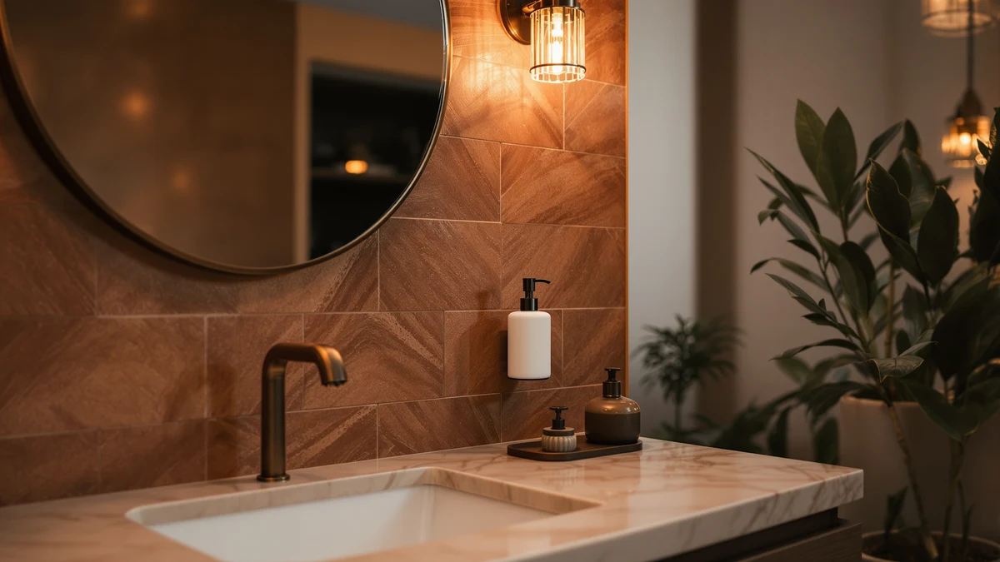

Best How to Install Soap Dispenser on Wall (2026)
Prices and picks verified as of August 2026. Independent, reader-supported reviews.


Things to Know Before You Buy
- The wall material decides the hardware. Tile and stone need a masonry bit and plastic or metal anchors, while a stud lets you drive screws straight in.
- Weight matters more than looks. A full triple dispenser can push past 3 pounds, so match your anchors to the filled weight, not the empty box.
- Height changes by room. Sink dispensers sit 4 to 6 inches above the counter, and shower units go near 48 inches from the floor.
- You can skip drilling. Adhesive mounting plates hold light pump bottles on tile and glass, but they trade holding power for a clean wall.
- Measure twice before you drill. A crooked bracket or a misplaced hole is far harder to hide than a few extra minutes with a level.
Learning how to install soap dispenser on wall setups takes about half an hour and a few basic tools, and the payoff is a clear counter with soap that stays exactly where you reach for it, instead of a bottle that keeps getting knocked over. Most people put this job off because they picture cracked tile or a dispenser that sags after a week. Neither has to happen. The task comes down to marking straight, drilling clean, and matching the anchor to the wall.
We walk through the full process in five steps below, from picking the right height to testing the pump once the soap goes in. You do not need to be handy to get a solid, level result. The one part worth slowing down for is the wall check in Step 2, since a bracket that pulls loose almost always traces back to the wrong anchor rather than a shaky hand. Read that section closely and the rest is quick.
What You'll Need
- Supplies: Wall anchors rated for the dispenser weight, mounting screws (usually in the box), pencil and painter's tape
- Tools: Power drill with masonry and standard bits, a level, and a tape measure
Step 1: Choose the spot and mark the mounting holes
Start by deciding where the dispenser will live before you commit to how to install soap dispenser on wall hardware. Hold the unit against the wall at the height you plan to use it. For a sink, aim for the nozzle about 4 to 6 inches above the counter so your hand slides under it without stretching. For a shower, near 48 inches from the floor works for most adults, and a few inches lower helps if kids share the space.
Once the height feels right, set a small level on top of the bracket or dispenser body and rotate it until the bubble centers. Mark each screw hole with a pencil through the bracket openings. If the surface is glossy tile that resists pencil, stick a short piece of painter's tape over each spot and mark the tape instead. That tape does double duty in the next steps by keeping the drill bit from wandering.
Step back and look at your marks before you touch a drill. Confirm they sit level with each other and clear any grout lines, backsplash edges, or the medicine cabinet swing. Two minutes of checking here saves you from a second set of holes later.
Step 2: Check the wall type and pick the right anchors
This is the step that decides whether your install soap dispenser on wall project lasts years or fails in a week. Tap the wall and figure out what you are working with. A bathroom wall is usually painted drywall, tile over cement board, or tile over drywall. If you feel a solid, dull thud, you may have hit a stud, and a screw driven into a stud needs no anchor at all.
For drywall without a stud, plastic expansion anchors handle a light pump bottle rated around 15 to 20 pounds. A heavier triple unit like the simplehuman calls for self-drilling threaded anchors or metal toggle bolts, which spread the load behind the panel so the screws cannot tear out. For tile, glass, or stone, use a plastic anchor sized for a masonry hole and keep the anchor tip behind the tile in the wall material beneath.
Weigh the dispenser mentally when it is full, not empty. A triple pump loaded with soap can more than double its box weight, and that filled number is what your anchors have to hold every time someone presses down. Match the anchor rating to that figure and you remove the most common reason wall dispensers sag or drop.
Step 3: Drill the pilot holes and insert the anchors
Fit your drill with a bit that matches the anchor diameter printed on its package. A hole that is too wide lets the anchor spin instead of grip, so err toward the smaller bit if you are between sizes. On tile, switch to a masonry bit and start slowly without hammer mode until the bit bites through the glaze, then ease into a steady speed. Rushing the glaze is how tile cracks.
Drill straight into each mark to the depth of the anchor. Wrapping a strip of tape around the bit at the right depth gives you a simple stop line so you do not go too deep. Once both holes are clear, push each anchor in by hand and tap it flush with a light hammer until the collar sits against the wall. It should seat snugly with no wobble.
If an anchor slides in loosely, the hole is oversized. Pull it, move over a fraction of an inch, and redrill, or step up to the next anchor size. A firm anchor now is the difference between a bracket that holds and one that pulls out the first month.
Step 4: Mount the bracket and secure the dispenser
Hold the bracket against the wall so its holes line up with the anchors. Start each screw by hand for a turn or two, which keeps you from cross-threading, then drive them with the drill on a low torque setting. Snug is the target. Overtightening can strip a plastic anchor or crack tile around the hole, so stop as soon as the bracket sits flat and firm.
With the bracket set, give it a gentle tug to confirm it does not shift. Now attach the dispenser itself. Most wall units either click onto the bracket, slide down into a channel, or fasten with one small screw underneath. Follow the pattern your model uses and make sure it locks in rather than just resting in place.
Check that the whole assembly reads level one more time. A dispenser that leans even slightly tends to drip and looks off against straight tile lines, and it is far easier to reseat now than after you have filled it with soap.
Step 5: Fill the dispenser and test the pump
Fill the reservoir with your hand soap, shampoo, or body wash, and avoid packing it to the very brim so it does not overflow when you press. If the pump feels stiff or spits air on the first tries, keep pressing. A new pump often needs five or six strokes to draw soap up through the tube before it flows in a clean stream.
Once soap is running, press the pump firmly a few times and watch the bracket. It should stay dead still with no flex or creak. That test is your proof that the anchors chosen back in Step 2 are carrying the load the way they should when you install soap dispenser on wall hardware for daily use.
Wipe down the nozzle and the wall, then use it normally for a day. Refill from the top as needed rather than removing the unit each time, and check the screws once after a week. A quarter turn of tightening, if anything loosened as the anchors settled, is all most installs ever need.
Common Mistakes to Avoid
The fastest way to a wobbly install soap dispenser on wall result is skipping the anchor match. People grab whatever anchors are in the drawer, hang a full triple pump on drywall rated for a light bottle, and watch it sag within days. Weigh the loaded dispenser in your mind and buy anchors for that number.
The second common slip is drilling an oversized hole. A bit one size too big feels harmless, but it lets the anchor spin freely so the screw never grips. If you are unsure, start with the smaller bit and test-fit the anchor before you commit to both holes.
On tile, rushing the drill cracks the glaze. Start slow, skip hammer mode until the bit is through the hard surface, and keep steady pressure rather than leaning hard. A cracked tile costs far more to fix than the dispenser itself.
Finally, do not trust your eye for level. A bracket that looks straight against a busy backsplash often leans a few degrees, which shows up the moment soap drips down one side. Use a real level in Step 1 and confirm it again in Step 4, and you sidestep the mistake that trips up most first installs.
Our Top Picks
The install goes smoother when the dispenser is built for wall mounting in the first place. These three units cover the range most bathrooms need, from a shower-ready single chamber to a low-cost sink pump, so you can pick the one that fits your wall and skip the guesswork.

Editor's Pick
Better Living Aviva Shower Dispenser
The Better Living Aviva screws to the shower wall with a single chamber and a solid bracket, so it holds shampoo within reach and survives daily steam without loosening.
$58.49
Check Price on Amazon
Best Value
Evhome Manual Soap Dispenser Kitchen
The Evhome manual pump keeps things cheap and simple for a first wall install, with a compact body that anchors easily beside a kitchen or bathroom sink.
$16.89
Check Price on Amazon
Premium Choice
Shampoo and Conditioner Dispenser Shower
This dual-chamber shower dispenser mounts to the wall and splits shampoo and conditioner into labeled pumps, which clears clutter from the shower ledge for good.
$19.99
Check Price on AmazonFrequently Asked Questions
How do you install a wall soap dispenser without drilling?
Use a mounting plate with commercial-grade adhesive strips or double-sided VHB tape rated for the dispenser's filled weight. Clean the wall with rubbing alcohol first, press the plate for 30 seconds, and wait 24 hours before you hang the unit. Adhesive mounting works on tile, glass, and painted drywall, but it holds less than screws, so it fits small pump bottles rather than heavy triple units.
How high should a wall soap dispenser be mounted?
For a bathroom sink, set the nozzle about 4 to 6 inches above the counter so your hand slips under it without stretching. In a shower, place the unit near 48 inches from the floor for an adult reaching while standing. Drop it a few inches if children use the space so they can press the pump on their own.
What anchors do I need to hang a soap dispenser on drywall?
A light pump bottle holds fine on plastic expansion anchors rated for 15 to 20 pounds. A heavier triple dispenser needs self-drilling threaded anchors or metal toggle bolts that spread the load behind the panel. Match the drill bit to the anchor size on the package, because a hole that is too wide lets the anchor spin instead of grip.
Can you install a soap dispenser on tile?
Yes. Use a masonry bit and start the drill slowly without hammer mode until the bit cuts through the glaze, then hold a steady speed. Seat a plastic anchor sized for the hole so the tip grips the wall material behind the tile. Go gently on the screws so you do not crack the tile around the hole.
How long does it take to install a wall soap dispenser?
Plan on about 30 minutes for a first install, including marking, drilling, mounting, and a test fill. Drilling into a stud or using an adhesive plate runs faster, while tile and heavy triple units add a few minutes for careful anchor work. The measuring and leveling in Step 1 take the most time, and they are worth it.
Verdict
Knowing how to install soap dispenser on wall hardware comes down to three things you now have: mark it level, drill it clean, and match the anchor to the loaded weight. Get the anchor right in Step 2 and the rest is a 30-minute job that holds for years. Skip it, and even a perfect drilling job pulls loose. For a shower, the Better Living Aviva makes the whole process easier because its bracket is built for a screw mount and shrugs off steam. If you want a low-stakes first try beside a sink, the Evhome manual pump costs little and anchors in minutes. Whichever unit you choose, run the pump test at the end and give the screws a quick check after a week. That final check is the small habit that separates a dispenser you never think about again from one you end up rehanging. Get the anchor and the level right, and you clear the counter for good.